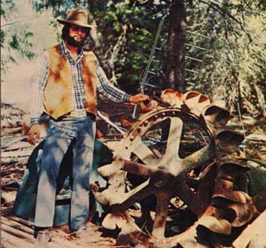
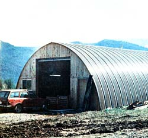
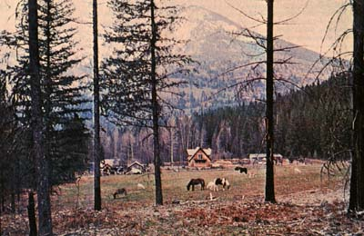

Big Bill Delp (manufacturer of the fastest and most compact homestead-sized hydroelectric impulse turbine in the West) stands beside one of the big, old turbine wheels that his new equipment is replacing. For a photo of Bill's wheel plus case plus attached generator
Away out West, running right up along Montana's north-western boundary, there's a range of peaks known as the Cabinet Mountains. And nestled down in those mountains is a river (the Clark Fork) that flows through the tiny town (a gas station, general store, school, and maybe ten houses) of Noxon. And just outside Noxon, up a dirt road, sits a rather ordinary Quonset hut. And inside that building-standing 6'7" and weighing 265 pounds-you'll find a man by the name of William H. Delp II.
Now this fellow isn't just big physically. Bill Delps talents as a designer, manufacturer, and installer of "alternative" (water, wind, solar, methane, etc.) energy systems are just as outsized as his shoulders are broad. And the shadow that Delp has begun to cast-in the developing battle between ordinary citizens and the environment versus the vested interests of an entrenched power lobby-already stretches from Montana to Washington, D.C., and beyond.
Big Bill Delp is young (28) and enthusiastic about putting low-impact technology directly into the hands of environmentally concerned people. He's also a capable technician who has personally pioneered new ways of getting that job done. Delp is licensed to work as a master electrician in the state of Montana, he's a founding member of the American Wind Energy Association, and he's the owner of a small (three-man) business-Independent Power Developers-that specializes in the design, fabrication, and installation of easy-on-the-planet energy systems.
Although Bill works with a wide range of alternative energy hardware, he's currently best known for his breakthroughs in homestead-sized hydroelectric plants. Ed Vitale recently visited Delp's Quonset hut shop to inspect the "I.P.D. low-impact, high-head turbine-generator" . . . and found that Big Bill's work with this and related hardware has pulled Delp into a conflict that is destined to grow much bigger as decentralized sources of energy are increasingly tapped by the individual. During the conversation that ensued, Bill Delp revealed himself to be technically adept, vitally concerned about the fate of the planet and its "little people" at the hands of Big Business and Big Government, almost painfully devoted to careful documentation of all his statements . . . and a genuinely nice guy to know.
PLOWBOY: Bill, you're a big, rugged, broad-shouldered guy-I'd guess about six foot seven and 265 pounds-who looks exactly like the type of fellow who'd tip his Stetson and say, "Howdy, ma'am" when the new frontier school-marm steps down out of the stagecoach. To put it another way, you surely do appear to belong here in the mountains of Montana. I hope you're not going to tell me that you just moved out from New Jersey last week.
DELP: Oh no. I was born in Missoula, Montana and raised on a dairy farm in Trout Creek . . . which is a community 15 miles southeast of Noxon, Montana, where I now live. I went through grade school there at Trout Creek and high school here in Noxon. Then I left to attend Eastern Washington State College in Cheney, Washington.
PLOWBOY: What was your college major?
DELP: I had a double major in electrical engineering and pre-med. After a while, though, I couldn't see any reason to get a diploma . . . so I dropped out of school and went to work in the hydroelectric engineering department of Washington Water Power-a public utility-in Spokane. I did maintenance and operations work on big hydroelectric systems while I was there and I kind of liked that . . . but after two and a half years, I knew that the city would never give me or my family the quality of life we wanted. So we moved back here to Noxon and I went into the electrical and refrigeration business for myself. I had figured that these western Montana mountains would give me both the quality of life I longed for and a creative atmosphere in which to work. And they have.
PLOWBOY: When did Independent Power Developers come into existence?
DELP: About a year after we left Spokane. I was getting ready to wire a customer's house back up in the mountains a ways . . . but when he asked the local utility to run electrical service up to the property, the company's representatives told him the installation-poles, lines, and so forth-would cost $20,000.
PLOWBOY: $20,000!
DELP: Yes, and that was just to bring the power in. That was what he'd have to pay simply for the privilege of paying them a monthly electric bill from then on.
Well, that didn't sound too good. But there was a nice stream on that piece of mountain land, and the owner asked me if I could put together a homestead-sized hydroelectric plant for him. So I rounded up some of the equipment that was available back then and I designed and constructed an energy system for his place that cost less than he'd have had to pay to bring in the commercial lines. And that's how it all began.
PLOWBOY: But was it really as easy as that, Bill? I mean, it's obvious as I look around your shop that the development of hydroelectric systems and windplants and other hardware that will allow an individual family to produce its own power in an environmentally sound manner . . . it's obvious that this has become your life's work. Besides that, I know you've taken some strong stands in the rapidly developing "little guys against Big Vested Interests" aspect of the whole energy problem. You're really involved here, in other words, and I find it difficult to believe that you got into this business so casually.
DELP: Well I didn't go into it for the money, that's for sure. I knew when I started trying to develop better and more efficient hydro arid wind electric systems for individuals that I didn't have much chance of getting rich at it.
Number one, as a licensed master electrician who had worked two and a half years helping to maintain and operate a commercial-sized hydroelectric system for a utility company I had no illusions about how "easy" it'd be to develop a really efficient and practical self-contained energy setup for a farm or a ranch or an individual family. I knew that the old homestead -sized hydro plants of the '30's, '40's, arid '50" had some serious limitations arid I figured it was going to cost me a good deal of time, energy, and income to overcome those limitations . . . if I were to correct the faults at all.
Number two, I also knew that the world wasn't exactly waiting with open arms for my breakthrough . . . even if I were lucky enough to make one. Very few people, you know, find the local utility charging them $20,000 just to turn their lights on. I knew when I started, in other words, that the potential market for my services and any equipment I developed was a rather limited one.
And number three, I was quite aware that if I did come up with some new systems that were actually inexpensive enough and efficient enough to appeal to any kind of a market at all . . . well, I'd be running head-on into the vested interests of the big guys who already had the energy, field sewed up.
In short, when I decided to devote myself to what is commonly known as "alternative sources of energy". I didn't have any visions of fast bucks dancing in my head.
PLOWBOY: What did -and does-motivate you then? Why did you enter this field in the first place . . . and why have you stayed in it? I know you've had some hard times and, in fact, that your company can't even afford to pay you a year-round salary yet. What is there about the business that keeps you in it?
DELP: Mostly just like it. This business combines so many of my interests! I've always been fascinated by electricity and the ways in which water-or the wind-can be used to produce it. I get a great deal of satisfaction out of using clean and renewable sources of energy to improve the quality of an individual's life.
On top of that, my company -Independent Power Developers -gives me something very important that was always missing from my other jobs: It gives me the satisfaction helping people who, because of their remote location can't get -or can't afford -commercial power from the utilities.
It just feels good to help someone way up in the hills get his first electric lights and supportive refrigeration. It feels good to know that you really helped to improve the quality of his life. And it feels extra good to realize that you did it without increasing the consumption of fossil fuels and without increasing the "need" for nuclear reactors.
And it feels even better to know that the system you installed helped to expand the amount of individual independence in the world by just a little bit. That guy you helped is now sittin' up there on the mountain enjoying his lights and his TV and his stereo and refrigerator and freezer and all the other benefits of modern life. But he's doing it by himself. He doesn't owe a thing to the big utilities or some government agency or any of the other massive forces that want to manipulate our lives. He's got everything those vested interests use to control us with these days . . . but he got it on his terms. He's still a free agent. I like that. I enjoy meeting and working with that kind of people.
PLOWBOY: Bill, how old are you?
DELP: Twenty-eight.
PLOWBOY: And how old were you when you founded I.P.D.?
DELP: That was back in 1972, when I was 24.
PLOWBOY: And what did you base the business on back then? What did you have to sell?
DELP: For the First couple of years we mostly scrounged around out in the country for the old Pelton wheels that someone had installed 20, 30, 40 years before. We'd find these abandoned impulse turbines and we'd rebuild them and incorporate them into new hydroelectric systems. We also bought a few systems from the James Leffel Company in Springfield, Ohio. It still manufactures those old-style turbines.
PLOWBOY: You weren't actually manufacturing any turbines of your own then . . . back in 1972 or '73?
DELP: No. But it was while I was rebuilding and installing those rather large and cumbersome low-head Pelton wheels that I got the idea for my high-head impulse turbine.
PLOWBOY: You've already lost me, Bill. You're going to have to explain your terms.
DELP: OK. Let's start at the beginning . . . probably somewhere back before the time of Christ when man first developed the waterwheel. That was a tremendous invention but it was also a relatively crude invention. Basically there's only one thing which turns such a wheel, and that's the sheer, physical weight of the water which falls on it.
In simplest terms, the amount of power that a waterwheel can produce depends largely on how much water the wheel can "catch" at any one moment. If you want to increase the wheel's output, you must make its buckets deeper so they'll hold more water . . . or you must increase the diameter of the wheel so that its rim contains more buckets . . . or you must make the wheel wider so that each of its buckets is also wider.
Now this can get rather cumbersome and it also imposes strict limitations on the maximum amount of horsepower that any particular waterwheel can produce. But that's just about where the technology of the field remained from before the time of Christ right up to approximately a hundred years ago.
PLOWBOY: What happened then?
DELP: The first crude impulse turbine was developed. Lester Pelton -and later, some other experimenters -took the waterwheel, shrank it down to a fraction of its former size, put a case around it, and -instead of just letting water run over a dam to fall on it-ducted the driving water to the wheel through a pipe.
Now this was a tremendous advance. Because for the first time it was possible for tons -instead of just pounds or hundreds of pounds -of water to push against a wheel.
That is: The only thing which turns a simple overshot wheel is the weight of the water that runs over a dam and falls on one side of that wheel. It doesn't matter if the dam is a hundred feet tall, it's just the little bit of water pouring off its top that strikes the wheel. And you can only extract so much energy from that relatively small stream and you can do it only at the time that the water falls.
If you run a pipe out of the bottom of that dam, however, and into an impulse turbine . . . you've got an entirely different situation on your hands. Now you call direct the weight of a 100-foot-tall column of water against your wheel . . . and you don't have to run that column over a dam to do it. As a matter of' fact, most of the force you're directing against the buckets -or vanes -of your turbine is coming from water that's just serenely lying there behind your dam. Because while it's lying there, that water is also "standing" 100 feet deep on top of your turbine. Or, as the hydro engineers say, it's furnishing the turbine with 100 feet of head pressure or "head".
PLOWBOY: OK. At least I know what head is now.
DELP: All right. If you want to extract a maximum of useful power from water, it's obvious what you do. You build a dam that's just as tall as you call make it and you install one or more impulse turbines below that dam or in its base and you "let 'er rip". And that's exactly what the big hydroelectric installations are all about.
But that's awfully expensive and few of the individuals or families who install their own hydro systems can afford to put in a dam that's a hundred or more feet tall. A dam even fifty feet high is out of the question for most people. So when folks began setting up their own water-powered electrical systems several decades ago, they generally were working with a head of fifty feet or less. And to make those low-head systems work, they had to run relatively large quantities of water through them. A family that wanted to drive a six- or a ten-kilowatt generator might find that it needed to run a 12- or a 15-, maybe even a 48-, inch pipe into its turbine. And that could get to be expensive too.
As a matter of fact, since they were designed to work off of a relatively large volume of water moving rather slowly, those old low-head turbines were kinda big -about 30 inches in diameter -and hard to carry up into the hills and costly to boot. And since they didn't turn over very fast, the people who bought 'em had to invest in a set of gears that would step the speed of the turbine's output shaft up high enough to drive the electrical generator that was hooked to it.
PLOWBOY: Those old homestead hydroelectric systems are beginning to sound both expensive and complicated.
DELP: You don't know the half of it. The water moved so slowly through those big inlet pipes that, in really cold weather, the ducts would sometimes freeze up and burst unless their owners went to the trouble and expense of burying them below the frost line.
There was a little problem of regulating those old systems too. Until just a few years ago, when modern inverters came on the market there was no really practical way on an individual household basis to convert direct current to alternating current. This meant that if you wanted to run ordinary AC refrigerators stoves, radios hand tools, and appliances with your little hydro setup, you had to use it to run an AC generator, And that's all well and good . . . except that there never has been an economical way to store alternating current the way you can store direct current in a battery.
Now what this meant was that, with the old low-head systems, you had to produce the AC you wanted right when you wanted it. Every time you turned another light on or off in the house or switched off the sweeper or the refrigerator kicked in, a little governor out on the impulse turbine had to open or close a valve in the nozzle that fed water to the wheel. And that valve had to be moved just enough to keep the turbine spinning at exactly the right speed to drive the generator precisely fast enough to produce just the amount of alternating current you were using at that instant.
PLOWBOY: Wasn't that kind of difficult to do?
DELP: Not as difficult as it sounds. Actually the regulation of the AC that I've just described could be rigged up to take place almost completely automatically But this method of regulating the amount of current a hydroelectric system produced had a rather sizable built-in hidden expense. The whole system, you see-input pipe, turbine, gears, generator, everything-had to be built large enough to handle the absolute maximum load that you ever expected to put on it. Even if that peak load only lasted a few minutes once every five years. This means that, as far as your day-to-day use of electricity was concerned, you had to "overbuild" your system. You had to invest more time, energy, and money in its construction than was really necessary for your ordinary use of' the setup.
PLOWBOY: Gee, I'd always thought those old homestead hydroelectric systems must have been pretty neat little rigs. Considering everything that went into them, though-the dam , a regular aqueduct of a pipe to the impulse turbine, the 30-inch turbine itself, gears, generator, regulator, and everything built large enough for an absolute peak load-they weren't neat or little at all. They were pretty darned big and expensive.
DELP: They were worse than that. They were, at least in a small sense, environmental disasters. When you consider the job they did-supply electricity to one single farm or ranch-the construction of the dam that one of those systems needed, and the ditching in of that big delivery pipe plus the pipe itself plus the incredible amount of water it diverted plus that big turbine and all the rest . . . well, they made about as much sense, in the light of today's technology, as strip mining does. I call those low-head hydroelectric setups "high impact" systems. By that I mean they have a high impact on their surroundings. As soon as I started working with the old rigs I wanted to find a way to do everything they did . . . but with about one-tenth the hardware and no dam or ditching at all.
PLOWBOY: And that's how you were inspired to develop your high-head, low-impact hydroelectric system.
DELP: That's right.
PLOWBOY: How does it work, and why?How does your system differ from the one you've just described?
DELP: One of the main secrets of my setup is that high head. We don't use anything less than 50 feet, we like 100 feet even better, and we'll take two or three hundred feet of head if we can get it.
PLOWBOY: Wait a minute! Don't you have to build a dam to get a head like that?
DELP: Not at all. Not for our system anyway. All you have to do is take water out of a stream or lake, drop it at least 50 feet through a pipe, and run it into the turbine.
PLOWBOY: But not everyone who has a source of water on his or her property has a 50-foot or better drop in elevation between that water and a location where he or she can install your turbine.
DELP: That's true. But there are many people who do have enough head on their land to take advantage of our system. And if you're still looking for a homestead and you want to make it energy self-sufficient you could do worse than plan on buying a piece of land where such a fall can be produced. Then again, if you've already got your acreage and it doesn't have that kind of elevation on it, you can always go back to one of the old low-head systems. In a case like that, I feet that a low-head system is justified
PLOWBOY: OK. I'll buy that Tell the about the pipe you use. Is it one of those 48-inch aqueducts that some of the old low-head turbines needed?
DELP: Not at all. It isn't even the 12- to 15-inch-diameter line that was much more common on the old systems. Not is it the heavy iron pipe that the low-head turbines were fitted with.
We use inexpensive plastic pipe that's only two or two and a half inches in diameter. The high head-all that pressure-makes the water run through it so fast that there's hardly any danger at all of the pipe freezing the way the old ones did. Therefore there's no reason to gouge out a big trench and bury it. If you do want to bury our pipe, though. it's small enough that one man with a shovel can do the job.
All in all, it only costs about 25% as much to install the piping for our system, the job is a whole lot easier, and it has a great deal less impact on its immediate surroundings.
PLOWBOY: How do you get by with pipe that small?
DELP: It's the high head that makes it possible. You can develop her sepower in a hydro system in one of two ways: [A] let a large volume of water strike your turbine wheel with a little bit of force the way the old low-head setups did it, or [B] spin the turbine with a little bit of water that hits the wheel with a great deal of force. We use the second method and, therefore, it takes only a small pipe to carry all the water-about 40 or 50 gallons a minute-we need for the operation of our turbine.
This approach, by the way, has a couple of other very important advantages. Since our turbine uses so little water, it can be operated year round in many areas where there simply isn't enough water to keep a low-head turbine spinning. Its limited demand for water is also the major reason that we don't need to build big, substantial dams for our hydro installations. At most, a simple stream diversion or low-profile weir will collect all the water we need for the operation of our system.
PLOWBOY: Tell me about the turbine. How does your high-head model compare to the impulse turbines on the low-head setups?
DELP: The old turbines, as we've noted, ranged around 30 inches in diameter. Some were bigger and a few were as small as 14 or 15 inches across. In general, they were pretty big and heavy. It was hard to get them back up into the hills into some of the places where they were installed.
Our turbine, by contrast, has a pitch diameter of 4-1/2 inches and a total diameter of five inches. Or, to put it another way, the whole thing-in its case, ready to run, and with a 2-kw generator attached -is five inches wide, a foot high, a foot and a half long, and weighs only 35 pounds. You can pack it anywhere on your back or by horse and install it with a screwdriver, a pair of pliers, and ail adjustable wrench.
PLOWBOY: The low-head hydroelectric plants wouldn't work right unless the rpm of the turbine's output shaft was substantially stepped up by a set of gears before that shaft was connected to the system's generator. What about yours?
DELP: Our turbine naturally turns much faster than the old ones. Its generator is fastened directly to the turbine's output shaft. There are no gears in between. And that generator, by the way, produces direct current instead of alternating current . . . which, in a roundabout way, lets us-once again-build the whole system much smaller than any of the old ones.
PLOWBOY: Is that right?
DELP: Yes. Remember what we said about the old setups and how their builders-who didn't have the inverters that, today, can convert DC to AC-were forced to generate alternating current for their AC equipment? And how that made them construct their systems as big as they'd ever possibly need them to be . . . and then, 99% of the time, run the whole setup at only a fraction of its capacity'?
Well, we don't have that problem because we do have access to solid-state inverters. We don't make them ourselves, but we can buy them from companies that do. And that allows us to design our high-head hydroelectric system so that it's less costly, less complicated to operate, easier to maintain, and a great deal more dependable.
PLOWBOY: How do the inverters do all that?
DELP: They allow us to mount a 36-volt DC generator on our turbine and then, since direct current can be stored, feed that 36-volt DC into a bank of deep-cycle, lead-acid storage batteries. And we can do this, of course, all the time, whether or not we actually want to use any of the current we're generating.
Then, at the time we do want to switch on some lights or listen to the radio or operate some shop tools, we pull some of that 36-volt DC out of the batteries and we run it through an inverter and we change it into 110-volt AC.
PLOWBOY: Ah ha!
DELP: What the inverter does, you see, is make it possible for us-as we're designing an installation for a customer-to knock the tops right off all the peak demands for power that his system is ever likely to be asked to produce. It allows us, in other words, to shrink his system down to just a little larger than it needs to be to handle its average load. We can then-for all practical purposes-set the turbine-generator to run constantly at that level.
BELOW LEFT: A simple weir feeds one of the Delp installations. BELOW
RIGHT: A 2-kw I.P.D. hydroelectric plant. FAR BELOW LEFT: The generator
and synchronous inverter that Bill is not allowed to use. FAR BELOW
RIIGHT: Battery bank for a self-contained hydro system.
Then, when the nearly mythical "average demand" for power is on the line, the generator's output will go directly through the inverter to feed it. When the installation's total demand for electricity is less than the turbine-generator's steady output, the excess current will be fed into the batteries and stored. And when the total demand is greater than the steady rate of output, both the generator and the batteries will feed the inverter to satisfy that demand.
PLOWBOY: That's pretty slick. But what will all this cost your customer?
DELP: We usually wind up running anywhere from half to three-quarters of a mile of pipe when we make an installation. Figure $1,000 for that. A turbine with a generator rated at 2 kw-2,000 watts-continuous output costs $985. The batteries will run another $800 and a 3-kw inverter sells for $1,400.
PLOWBOY: Let's see, that's . . . you're talking more than $4,000!
DELP: Yep. That's a lot of money for most folks. But it isn't much at all compared to what the commercial utilities now charge to bring in their electricity. At least in these parts, if you want to run power back somewhere off the main lines today, the electric company quotes you a price of $2.38 a foot. Which means that the first one-third of a mile is going to cost you as much as the whole system we're talking about. If you live more than that distance from an existing line, you're money ahead-sometimes a great deal-to invest the four or five thousand dollars in your own hydroelectric plant. Either that or, as some people still prefer to do, just do without electricity entirely. I can't quarrel with the folks who choose to go that route.
PLOWBOY: Neither call I. But let's face it . . . most of us today want those electric lights and that refrigerator and that stereo. So let's get back to your basic system which costs . . . ah . . . $4,200. Let's say that somebody a mile or more up in the mountains decided that, instead of paying the local utility $20,000 to bring in its line, he'd give you $4,200 instead. And you then installed your basic system. What would that equipment do for him?
DELP: Well, if he had 200 feet of head and 40 gallons of water per minute available to him-and that's not unreasonable here in the mountains-his system would give him 890 kilowatt hours of electricity a month to work with. That's enough to provide his family with electric lights, refrigerator, deepfreeze a water heater, electric stove, vacuum cleaner, and other miscellaneous household appliances and shop tools.
PLOWBOY: What about electric heat?
DELP: No. This system alone wouldn't furnish the house with electric heat. Maybe just one room, if it was well insulated and you were willing to give up some of your appliances, but that's about it with this basic setup. If you wanted a total electric house, you'd have to put in a bigger hydroelectric system . . . and that, of course, could be done. It'd cost more, though.
PLOWBOY: Would your system do anything else for our remote family?
DELP: Oh yes. There are two or three really nice little side benefits that you can realize from the operation of one of these high-head outfits. You can tap the input pipe just ahead of where it goes into the turbine-you just put a "T" fitting in the line and bring off a small-diameter pipe-and you call use the water that you draw off to run a whole household. Sinks, tubs, showers, you name it . . . there's enough pressure there to supply everything better than any city water system can to do the same job. In fact, it's sometimes necessary-if you've got two or three hundred feet of drop in your main supply pipe-to put a pressure reducer on the household lines. Otherwise you'll knock the glass right out of your hand when you turn on the kitchen faucet for a drink of water.
You can also tap into the exhaust water pipe-the one that carries the main stream of water away after it has passed through the turbine-and use that water for your livestock, to fill a lake or pond, to raise fish and ducks with, or to irrigate your fields.
It's kinda nice, too, to know that you've got all that water being constantly piped down off the mountain to your household just in case you ever have a fire. That's good protection for the remote homestead to have on tap.
PLOWBOY: When someone spends the money for your high-head turbine electrical system, then, he's also getting household water under pressure, farming and livestock water, and fire protection . . . all thrown in free.
DELP: That's right.
PLOWBOY: I hadn't realized that. Yom customers get a heck of a lot more for their money than I first thought, Bill. But tell me . . . what's the useful life of your equipment?
DELP: Well there'll always be some maintenance on a system like this, but we've done everything we can to design and manufacture hardware that's trouble-free and that will last forever.
We've done things you'll probably never see. For instance, once we've mounted all the cups on the wheel that's the heart of each turbine, we dip the whole assembly in epoxy. When water at a head of, say, 300 feet blasts out of the turbine nozzle and hits that wheel, you see, it strikes those cups with enormous force . . . enough to wear them out pretty rapidly unless they're protected in some way. So we give the whole wheel a heavy coating of epoxy. We want it to work for a good, long time.
The plastic pipe that we use to run water into the turbine should last just about indefinitely. The turbine itself . . . I don't know. We'll just have to wait and see. It should last a lot of years, though. The generator will need some regular, minor maintenance . . . but it should stand up pretty well too. And so should that solid-state inverter.
The weakest component in the whole system is probably the bank of deep-cycle storage batteries. And it's most likely good for at least 15 years.
PLOWBOY: That long? Batteries like that usually need to be replaced every five to seven years when they're used on a windplant
DELP: I know. We install windplants too. But we've got a different situation on our hands when we hook that bank of batteries to a hydroelectric system.
Compared to the flow of water down a mountainside, the wind is awfully sporadic. It blows a little bit from one direction and then it really blows from another direction and then it doesn't blow at all for days at a time. For that reason, the batteries on a windplant get only partly charged on some days, are suddenly fully charged on others, and then may be completely discharged for weeks on end. That's awfully hard on them and wears 'em out in a hurry.
Wire those same batteries into a hydro system, however, and it's a different story. That water power is turning that generator all the time, day and night. The batteries never even get close to a condition of full discharge. And they're always balancing out the same input of electricity every 24 hours, day after day after day. Under those conditions, they should go 15 years easy.
PLOWBOY: Bill, what's the market for your hydroelectric system?
DELP: When I first got into the business, the market was strictly in the remote applications. It was strictly, with people who couldn't get commercial power from the utilities at iny price and with the folks who were quoted absolutely outrageous prices for commercial service.
But that's all changed rather drastically during file past couple of years. Energy prices of all kinds have been going up very rapidly, as you know. So rapidly that now, if you amortize one of these small hydro systems out over ten years, you find that it costs you only about 15% more than what commercial power-even without an installation charge-would run over the same period. And if you amortize our system over 15 years-which is what the weakest link, the batteries, should last-you'll find that we're beating the utility's costs . . . and giving you your household water, irrigation water, and fire protection to boot. Not to mention your independence.
PLOWBOY: So you're getting to be directly competitive with commercial electrical services.
DELP: We're right there. We're breathing down the utilities' necks. And we're doing it on a sound economic basis at the same time that increasing numbers of people seem to be looking for a way out, so to speak. More and more individuals are coming around to see us, not necessarily because they think we're going to offer them less expensive electricity, but because they want to control their own source of electricity. They want their own little utility. They want independence from The System.
As a result of these two factors-[A] we're closing the economic gap between the cost of our hydro systems and the cost of commercially available electricity and [B] an increasing number of individuals just plain like the idea of generating their own power-our market is steadily increasing.
PLOWBOY: And we've spent so much time talking about your developments in high-head hydroelectric systems, Bill, that I should point out to our readers that you service far more than just that one market.
DELP: Oh sure. That's our personal baby, but we still install low-head hydro systems too. And we're dealers for a couple of lines of windplants. We dabble a little in solar energy and we sell some tanks and other components for homestead methane digesters. We like almost any kind of alternative energy system you can name. That's why our company is called Independent Power Developers.
PLOWBOY: What's the biggest single job you've ever worked on?
DELP: There were a couple of commercial-sized greenhouses, one in Virginia and the other in Washington . . . a total of 9,000 square feet of hydroponic beds in all. We installed a 15-kw system for one of them. We could have gone bigger, but that's all the water energy we had to work with on the property. We can handle anything from a 1-kw up to a 1,000-hp installation.
PLOWBOY: Bill, if you'll allow me I'd like to get away from the purely nuts and bolts end of your business for a while . . . and talk about the more political aspects of what you're doing. Haven't you been fighting something of a running battle with one of tire utilities up in this part of the country?
DELP: Oh yes . . . Northern Lights, a rural electric cooperative that operates out of Sandpoint, Idaho. I've been having a little tussle with that organization over a synchronous inverter I installed up the road in Heron, Montana.
PLOWBOY: What's that? Is that one of the inverters we've already talked about?
DELP: No, it's something quite different. The synchronous inverter I installed in Heron was developed by Hans Meyer of Windworks . . . an alternative energy commune in Mukwonago, Wisconsin. Actually Hans and the others at Windworks have officially designated this piece of equipment the Gemini Power Conversion Unit, or PCU. We just find it easier to call the unit a "synchronous inverter".
PLOWBOY: What does it do?
DELP: Well it does something very interesting. It lets you set up a homestead hydroelectric plant or windplant and then hook that small, private system directly into the local utility's power grid. This does away with your windplant or hydroelectric system's need for a bank of batteries or a DC-to-AC inverter and even gives you the chance to make a little money out of the deal.
PLOWBOY: How does it do all that?
DELP: The Gemini PCU is the inverter. And it not only converts the 36-volt DC that your turbine-generator produces into 110-volt AC . . . it takes that 36-volt DC as it is produced and it instantaneously converts it into 110-volt AC that is absolutely synchronized with the 110-volt flowing through those utility powerlines. Which allows you to use that whole power grid as your bank of storage batteries!
Then, depending on your generator's output and the load you put on your own electrical system, the Gemini PCU automatically switches back and forth as needed from one to another of three possibilities: When your demand load is exactly the same as your generator's output, your system uses its own power and draws none from the utility. When your total demand is less than your production, the excess is fed into the power company's lines. And when your demand is more than your system's production the difference is drawn back from the utility's grid.
PLOWBOY: That sounds simple enough.
DELP: It is. The technical problems have been ironed out. The equipment works beautifully. The electric companies, however, don't want to hear about the synchronous inverter because it allows you to sell your excess power to your utility and that represents an enormous threat to the virtual monopoly on the production and distribution of' electricity that they now enjoy.
As long as you keep your little generator and your little demand for electricity off to yourself, the big utilities can't do anything about it. They might prefer that you use their power at their prices, but they can't force you to do that. They have to leave you alone.
They'll also leave you alone-except to send you regular bills and, in some cases, charge you for the original installation-if you fall into step and buy their electricity from them. They'll even, as it develops, leave you alone in some cases if you want to give them your excess electricity on one day and then buy it back from them on another. But they always scream if you have the audacity to ask them for air even credit on the exchange. They even scream and start to hit below the belt when you suggest that you're willing to sell them your electricity at wholesale prices and buy theirs at retail.
PLOWBOY: What do you mean "hit below the belt"?
DELP: They deny that something like the synchronous inverter can even exist despite the fact that giant corporations such as Reliance, Westinghouse, GE, Rockwell, and Allen Bradley have mass-produced them for years. They refuse to admit that thousands of commercial synchronous inverters-
in braking locomotives, elevators, and cranes, and the speed controls in some processing and assembly lines, to name a few applications-each regularly transfer as many as 800 kw into electrical utilities' transmission lines in a safe and efficient manner. They refuse to allow tests of private synchronous inverters on the grounds that the units are "unproven". They vaguely hint that their lawyers feel there's an outside chance that some of the current produced by some private hydro installations might have somehow technically violated somebody's water rights . . . and that this somehow taints any electricity that any private individual might want to produce and feed into their power grid.
This, at least in my mind, can't be called anything but hitting below the belt. The guys with the vested interest-the people who now control a virtual monopoly in the production and distribution of electrical energy-are pretending that they're very cooperative and that this is a technical and a legal question we're talking about. When all the time they're actually being uncooperative because we're talking about moral questions and questions of control.
PLOWBOY: I can understand the "control" . . . but why do you say "moral" questions?
DELP: Because we're talking about what's right and what's wrong. We're talking about putting the profit of the few now in control of a basic industry ahead of what's really best for the planet and what's really best for the individual citizen in our society. We're talking about leaving all our production of electricity in the hands of people who intend to generate that power by strip mining fossil fuels and building nuclear plants, instead of opening up at least a small portion of that production to private individuals with windplants and low-impact hydro systems. We're talking about how these questions of profit and control affect the way we're either allowed to live . . . or forced to live.
We're not talking about synchronous inverters so much as we're talking about the individual's basic rights in our society . . . and that scares some of the fat cats at the top. They like to maintain the illusion that this is a free society and that an individual is in charge of his or her own destiny, but they're deathly afraid to give that idea a real try. Because when you actually set an individual free-when you really let that person maintain his or her ability to have transportation, food, lights, heat, and other necessities independent of a regulated source-that individual just plain starts getting awfully independent. He or she starts thinking about his or her real rights. And that makes some of the guys on top very nervous. They don't want you to think about things like that.
PLOWBOY: That's tough talk, Bill.
DELP: Yes, but it's based on facts. I'll give you some of those facts and you can draw your own conclusions. Let's start right down at the bottom-with my own case, that I can quote from personal experience and document with letters and memos and work our way up to some of, the biggest agencies in the U.S. government.
I installed two 3-kw hydroelectric systems together in one package over in Heron and I ran their output into a Gemini PCU that's tied in to the utility's lines. I'm a master electrician licensed to work in Montana and I observe all the standards and I follow all the codes, so there's no way that Northern Lights, the utility-actually a rural electric cooperative-can attack me on those grounds. So I politely requested permission to turn that 6-kw system on and use it. If not on a long-term basis, at least experimentally.
PLOWBOY: And what happened?
DELP: The people who run the company told me that Northern Lights was too small a company to fool with experiments.
I had enough supporting documentation-to prove that the synchronous inverter would work without harming their powerlines and distribution network-to allow me 10 pull the rug out from under that argument, so they quickly decided to take some other tacks.
For one, they began to question the right of my customer to generate electricity with his synchronous inverter equipped hydro system They argued that his water rights to the stream in question were only for irrigation and domestic purposes . . . and that, technically, he'd need a new permit if he wanted to produce electricity.
This is absurd, at least to the, because the generation of electricity with my high-head turbine system does not-like irrigation and household uses of the same stream-displace any water. All the water that's diverted from the stream to power that turbine goes right back into the same stream. The temperature of' the water isn't raised or lowered, and nothing is added except a little oxygen through aeration . . . and that's beneficial. But they still raised the issue.
They also questioned whether an individual had the right to sell electricity generated on his own property from a stream-even though he didn't change the runoff from his property in any way-that eventually flowed into a river on which a commercial utility held the franchise to generate hydroelectric power!
And then, under the guise of being extremely concerned and cooperative, they wrote three different letters asking "advice" about whether or not Northern Lights should allow me to experiment with the Gemini unit.
PLOWBOY: To whom were the letters sent?
DELP: To the Public Service Commission of Montana, the Rural Electrification Administration of the U.S. Department of Agriculture, and the International Brotherhood of Electrical Workers.
PLOWBOY: Well . . . at least on the surface, Bill, it appears that Northern Lights was simply going about the job of getting the information it needed to make a rational decision in an orderly and intelligent manner.
DELP: That's just the point. This was nothing but a public relations gimmmick. The cooperative didn't need the approval or advice of the union or either one of the agencies it wrote to in order to test the synchronous inverter. None of those people knew any more about the Gemini unit than Northern Lights did and its managers knew it. The cooperative could have exercised its discretion and made a study of the inverter on its own and those managers knew it. But they didn't want to.
Quite simply, what this company was doing was putting on a false front of being a Good Guy and making an honest effort to seek assistance while actually stalling and muddying the waters. The simple fact of the matter is that I had all the technical information that Northern Lights needed for its evaluation and I freely offered it to the company's engineering staff. I even offered to engage a non-partisan engineer to answer any questions they might have. But they wouldn't have any part of it. They wrote their letters instead.
PLOWBOY: And what kind of answers did they get?
DELP: Well, at least from the Department of Agriculture and the International Brotherhood of Electrical Workers, just the kind they apparently wanted. Very tentative "we don't know enough about the system, go slow" answers. But answers that contained some rather interesting responses.
The union's letter, for instance, characterized the synchronous inverter as one of the "fads of our time". The writer then went on to observe that "I just don't believe that anyone may go into the business of generating electricity and this I am certain would include the customer of a utility".
Notice the direct reference about the right of an individual to go into the business of generating electrical energy. The letter from the USDA's Rural Electrification Administration conveys the same concern. It started out, of course, by saying that the Administration didn't know anything about my equipment but then immediately concluded that "the technical problems of operating such a system in parallel with an electric distribution system could be considerable".
The REA also seemed to belie its professed ignorance of the synchronous inverter by stating that, "There will be an added metering investment for the utility to ratchet the kilowatt hour meter so that it will not run backwards if power flow is reversed . . . It would not be reasonable for the electric utility to buy energy at the same price that it is sold."
PLOWBOY: I thought that Northern Lights asked these guys if they thought your installation would work . . . not whether or not the company could make money on it.
DELP: That's correct. You can see the preoccupation of the people the utility very carefully chose to write to.
PLOWBOY: I'm especially disappointed with the REA. Hell, it was formed to serve the people . . . not protect the utilities! If what you say is true, this looks like yet another example of a government agency that is supposed to regulate big business becoming the silent partner of that business.
DELP: Yes, that's what I was talking about. A great number of the big guys at the top are paying lip service to the idea of finding alternative sources of energy and low-impact methods of producing power . . . but their real concern is "who's going to control those new sources and those new methods?"
Both the utility I've been tangling with and the REA are treating the synchronous inverter the same way Big Business and Big Government are treating the solar energy industry. They're trying to discredit hardware that is already working until they can put their hands on the control of that hardware. And then-miraculously-all their objections are going to vanish. Just like Ma Bell rents-but doesn't sell-her telephones, they want to own all the solar hardware and all the synchronous inverters and rent them to us little guys.
A perfect example of this fact-and this really upsets me-is the attitude of the U.S. Department of Agriculture. The same USDA that said it didn't know anything about synchronous inverters in its correspondence with that little rural power company up here in Montana is right now involved in research with synchronous inverters in conjunction with the large wind systems that NASA and ERDA are testing (see The Plowboy Interview in MOTHER NO. 39). See. The USDA won't even acknowledge the existence of synchronous inverters when an individual owns one, but it carefully studies the device when it has commercial possibilities that a large utility can cash in on.
I think that's why Northern Lights wrote to the USDA. The people I'm up against at the rural electric company are very shrewd. They've been telling their customers that, due to the energy shortage, they have no choice but to raise everyone's rates. And then here I come in with a study that shows we can produce enough electricity with little environmentally sound high-head turbine-generators on the streams right in our own area to actually lower rates-or at least hold the line on them-and I've got all the hardware we need to do it.
Now these guys knew if they just gave me a flat "no" that I was prepared to take my story to their customers in public letters. So they put up this smoke screen that would allow them to say, "Well, we did look at his system and we asked others about it and we're doing all we can." These people are not stupid. They seemed to be very careful to send their letters to people whom they thought would answer in just the way they wanted them to.
PLOWBOY: But wait a minute, Bill. A minute ago you said that only the IBEW and the USDA sent back the kind of letters that Northern Lights wanted. What about the Public Service Commission of Montana?
DELP: The people at the Commission really have their heads on straight. I have copies of that correspondence and the Montana Public Service Commission-which, unfortunately, does not have control over rural cooperative power companies-must have surprised the folks at Northern Lights. In answer to the question of whether or not the utility should test my equipment, the Commission said:
"In the light of our knowledge of Independent Power Developers' proposal, we are strongly in support of appropriate applications. The area of western Montana with which we are familiar seems suited to such an application and we are pleased that your company has this under consideration.
"The Montana Commission would encourage your efforts to develop supplemental generating systems. We also shall make available to you such regulatory assistance as we may be in a position to provide."
PLOWBOY: Hooray! And, as a result of that letter, did Northern Lights indeed allow you to feed power into its grid?
DELP: No. Last December the attorney for Northern Lights sent my attorney a letter in which the utility respectfully declined to allow me to generate electricity into its lines, for three reasons: One, the letter of skepticism from the union. Two, a conversation that someone in their office had with a Mr. Carlson of the Conservation District of Montana in which Carlson indicated that I had obtained no permit for the Heron generator's stream diversion. And, three, that further research into Montana laws was needed "with regard to an electricity producer supplying electricity to persons other than himself when the other person has the right to the territory involved".
Now this, again, was nothing but a smoke screen and let me say a kind word for Harley Carlson, the Chairman of the Green Mountain Conservation District. When he found out that the co-op had used his name in refusing me permission to tie in to its grid, he sent a scathing letter to the company. Let me read it to you in its entirety, because it does support everything I've been saying about how this public relations game is being played:
"It has been brought to my attention that your refusal to allow Independent Power Developers, Inc., of Noxon, Montana to use their generating unit in connection with your utility lines was based on objections from your employee's union and lack of authorization from the Green Mountain Conservation District.
"I'm sure no one in your organization would have used me as a goat in this matter, so there must have been a misunderstanding. To clarify, I did tell one of your people that I.P.D. had not applied for a permit, back in December, but I also told him no permit or application would be necessary for work completed before January 1, 1976. I have ascertained that all diversion work on the unit in question was completed and operational on October 13, 1975.
"I'd like to assure everyone that our district board of supervisors will follow the mandate of the Montana State Legislature in making the waters of the state available for every good and useful purpose.
"In addition, I must ask whether you've given I.P.D. your best effort to cooperate, because the supervisors of our district and our neighboring district in Lincoln County are obligated to seek the best and most acceptable solutions to all conservation problems including energy resource development. I currently feel that your proposed development on the Kootenia River is good and necessary, but I could hardly give my support to that project without helping my own district cooperators to develop their own power resources first, especially since their plans appear to be environmentally more acceptable.
"Finally, as members of our co-op utility, I'm sure all our landholders would find it hard to understand why the employee's Electrical Worker's Union could exert so much influence on such a critical management decision. I urge you to review and reconsider your decision regarding the installation of this and future generating units and please keep me informed in order that I may better serve you and my district."
PLOWBOY: Beautiful! Did his letter do any good?
DELP: I still haven't received permission to feed current into the Northern Lights grid, if that's what you mean.
We-the people in the alternative energy movement- are making some strides in this area, though. I understand that there are now six of the Gemini synchronous inverters being tested around the country. None of the utilities involved has yet agreed to pay even wholesale prices for the electricity being fed to them through the units, but at least they're accepting it and that's allowing us to prove that it doesn't damage the established power grids.
PLOWBOY: It's probably only a matter of time, then, until anyone who wants to can set up such a system and get paid for the electricity he or she delivers into an electric utility's network . . . isn't it?
DELP: Don't be too sure. Just because we're proving the technical issue has been settled doesn't mean that the people in power are going to give up on the economics of the situation.
I've been in Washington and I've walked through those halls of government and, being a country boy, I didn't get to talk to the right people. I didn't get all the answers, but I got enough to give me the feeling that the real issue is still control.
You just wait and see. If we ever get to the place where an individual can set up and operate his or her own little utility, we're all going to have too much independence to suit some of the Big Boys on the top. And, if we aren't careful, they're going to take that independence right away from us again with their ultimate weapon . . . taxes. They're going to tax our little windplants and our little hydroelectric systems so heavily that we'll have to have outside incomes to support them. And then we'll be right back where we started.
When we talk about windplants and solar collectors and hydroelectric systems and all the other facets of the alternative energy movement, we're really talking about far more. We're talking about individual rights. We're talking about "power to the people" in a much more meaningful way than most folks realize.
|
 Big Bill (manufacturer of the fastest and most homestead-sized hydroelecric impulse turbine in the west stands beside one of the big, old turbine wheels that his new equipment. for Photo of Bill's Wheels that his new equipmentis replacing. For a photo of Bills wheel plus attached generator) |
 Alternative energy ""breakthroughs"" are not always made in expensive labs on big government contracts. Sometimes they're made in places like Noxon, Montana in something like this old Quonset hut . . . the home of Bill Delps company, Independent Power Developers. |
 The owners of this remote homestead in the mountains of western Montana now enjoy the comforts of electricity, thanks to the I.P.D. turbine generator. Better yet, they know that their hydroelectric system has minimum impact on the surrounding environment. |